Sprint 3
Task 1
a)
Map Editor(Nico)
We improved our map editor greatly, the different tiles can be drawn on the screen directly.
Through pushing a "save" - button a text file is created, which can be used to create the playable arena.
Class MapEditor:
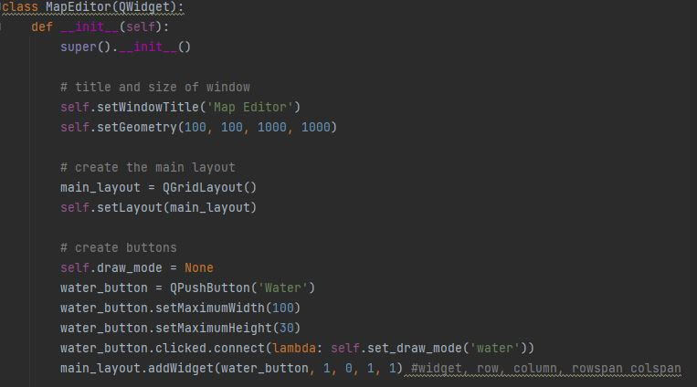
- We use a grid-layout which arranges widgets in a grid-like structure.
- Clicked.connect() function: When the water_button is clicked, a clicked signal is emitted, and the slot function, which is the set_draw_mode() method is executed.
- Without lambda, the slot function would be immediately called without waiting for the button to be clicked.
- The return value of self.set.draw_mode() would be passed to, which is none.
- Lambda ensures that the passed to argument remains a function.
The "save" button:
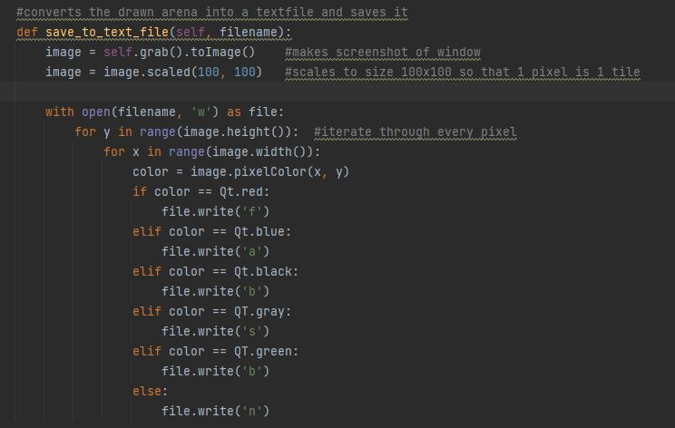
- With grab() an image of the actual window is captured.
- 1 pixel should represent a tile, therefore the image is scaled to a size of 100x100.
- Based on the color of each pixel, the corresponding letter representing a tile is written to the file.
Functions regarding the mouse movement
The functions mousePressEvent, mouseMoveEvent, and mouseReleaseEvent are predefined functions in the QWidget class of PyQt.
These mouse functions allow the user to draw shapes on the widget by clicking, dragging the mouse, and releasing it.
MousePressEvent
- MousePressEvent() is called, when the mouse Button is pressed.
- If draw mode is not none, this is the case, when a tile was selected previously, the position of the mouseclick is saved.
MouseMoveEvent
- MousePressEvent() is called, when the mouse Button is pressed.
- The height and width of the shape is calculated, by subtracting the current x and y position from the starting point, initialised in MousePressEvent.
- Afterwards, the drawing is included in the shapes list and the screen is updated with self.update
- Drawings are continuously added to enable their display on the screen.
MouseReleaseEvent()
- MouseReleaseEvent is called, when the mouse Button is released.
- MouseReleaseEvent has the same implementation like MouseMoveEvent, with the difference that self.start_point is resetted back to None, since the drawing of the shape is complete.
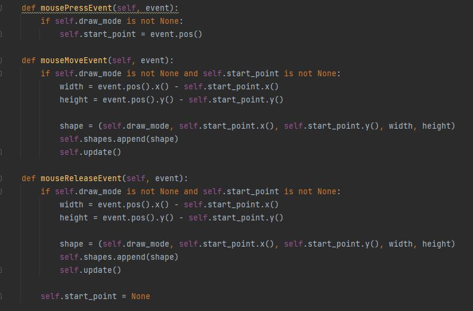
Difficulty:
Since we are using a grid-layout, the widgets are automatically aligned to a certain extent based on the layouts grid structure.
This made it difficult to position the buttons in a desireable way.
For example, the following code had no effect:
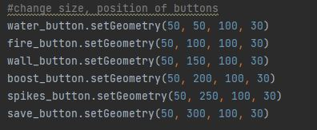
We helped ourselves, by adding an empty stretch which pushes the buttons at the bottom of the screen.
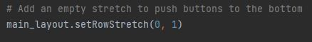
Further improvements:
- Instead of just coloring the tiles, we want to create the playable arena by letting the user draw our graphical tiles on the screen.
- Load button to allow the user changing already saved arenas.
- A backtrack option to reset the latest drawing would be useful.
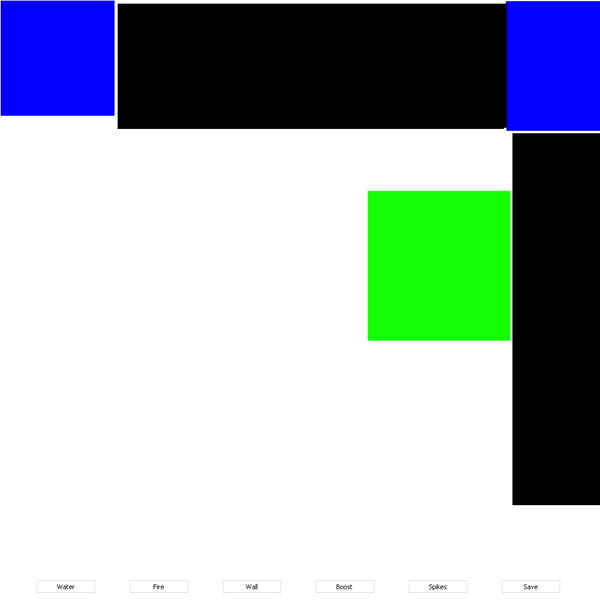
b)
We use the images drawn in Task 2 in order to represent the tiles graphically. We currently differenciate between Normal, Fire, Water, Wall, Boost and Spike tiles.
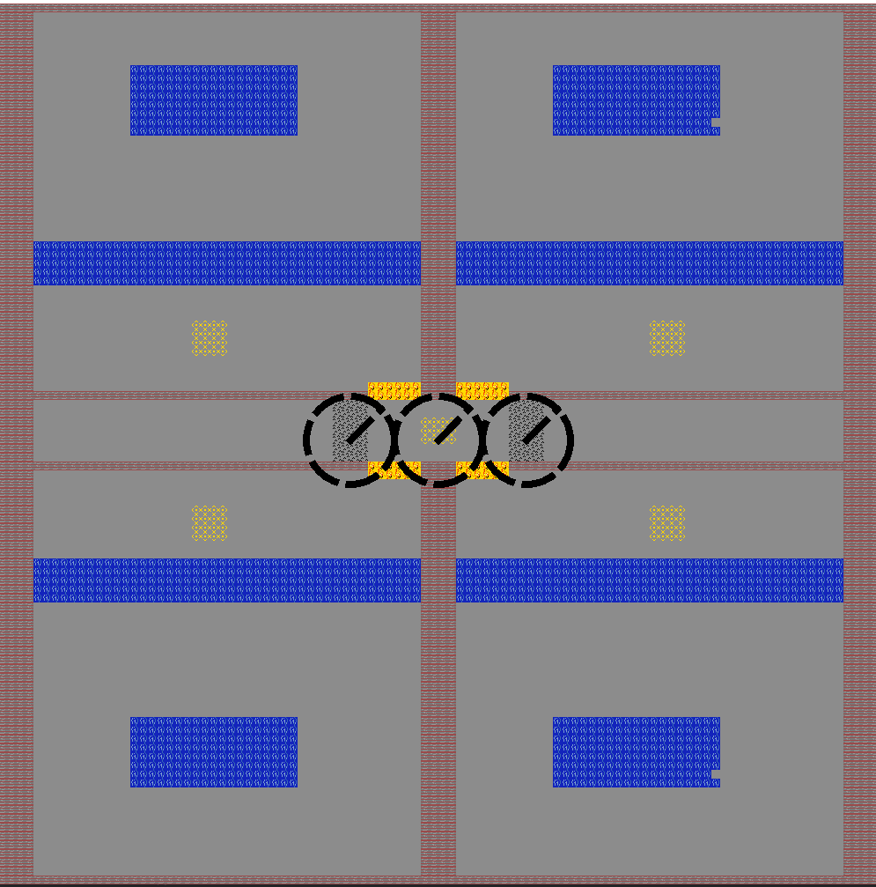
The images are drawn each time the arena is drawn, we first check in the Text file of the arena which tile is at the given coordinate, we then load the corresponding image and scale it down to be 10 x 10 pixels large using a pixmap.
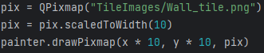
c)
We changed the Robots from directly using a movement Speed variable to determine their speed to now calculate their current velocity using acceleration and the time between "frames".
The same thing was done to the calculation of rotational speed.
To avoid reaching infinite speeds we also introduced constants for maximum movement speed and maximum rotational speed.
This is where we deviate a little from the original Task and instead of a programm wide constant introduce a different constant for every "type" of robot. This will allow us to have more or less agile types of robots in the future.
Furthermore we did not clamp the robots aceleration but instead it's speed.
Implementation of speed and aceleration:
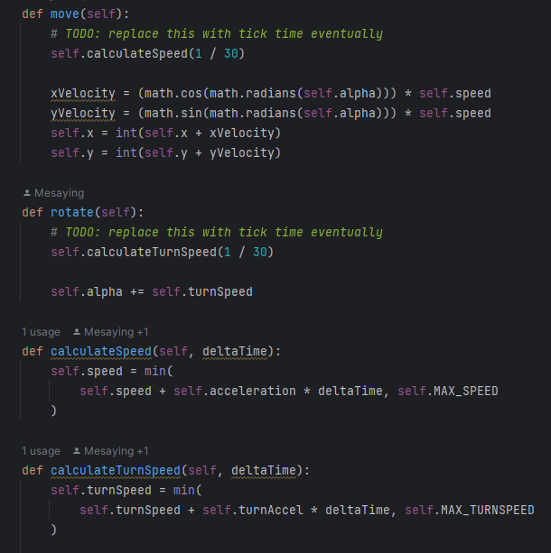
You can see the Robots moving here:
Your browser does not support the video tag.
d) (Marcel)
For threads we use a worker class that inherits from QThread.
The MovementManager_ is a class that handles the movement wenn we start the thread we create an object of that class.
The moveRobot function gets called using a signal it uses the Movement Manager to update the Position.

Some Problems here since we also tried QThreadpool it would be easier to run multiple Threads but since it does not support signals and slots we choose the Qthread.
The signal and a dictionary to store the threads.
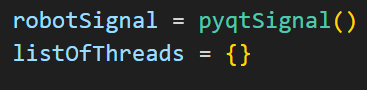
This Function creates the threads and starts them:
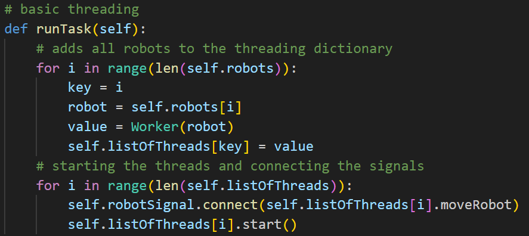
The first for loop creates the threads and puts them in the dictionary.
The second one connects the signals and starts the threads.
For the different types of movement we use Enums to store the information.
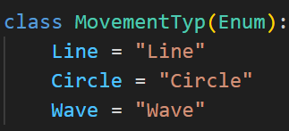
The Movement Manager uses match and case to check what type of movement it should perform.
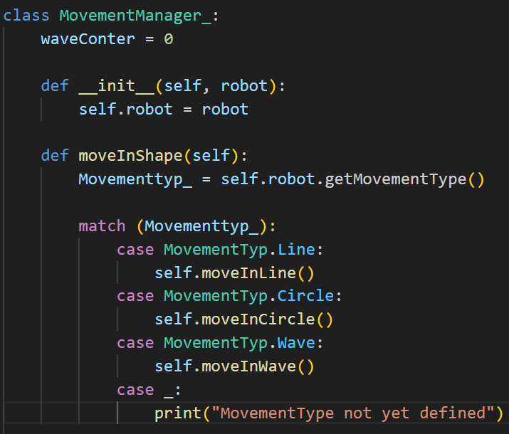
The Types of Movement we have right now:
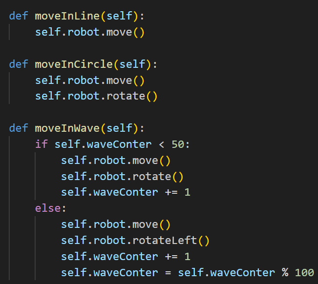
Task 2
For now we only drew 4 different tiles: Grass, Fire, Water, Spike, Normal, boost and Wall tiles
These were drawn by hand using an online Pixel art editor
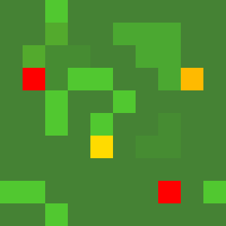
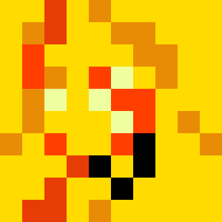

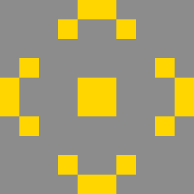
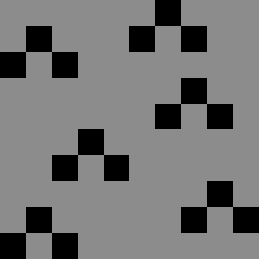
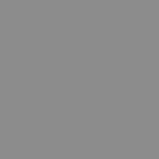
We are not yet using these to draw the arena.